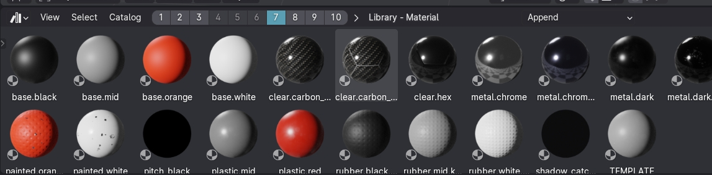
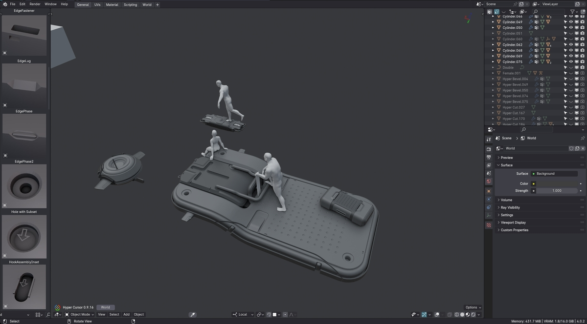

Asset Browser tools
The Asset Browser tools build on Blender's native Asset Browser and significantly enhance its functionality and general asset creation in Blender.
MACHIN3tools 1.8 of MACHIN3tools also brought Assetbrowser Bookmarks, and 1.9 allows you cycling the display type just like in a filebrowser.
MACHIN3tools 1.10 to 1.12 brought major updates, further improving working with assemblies, including within a single blend file, and not necessarily as external assets.
Assembly Assets
A core concept of the Assetbrowser tools are Assembly Assets, which areusually multi-object assets, that are organized into a collection, and referenced by an instance collection empty.
This allows you to work with them as a single unified object or drop them into a scene from an external file via the Asset Browser, again as single unified asset.
Assemblies can be optionally disassembled at any time, or in DeusEx directly edited.
Menu
3DView > MACHIN3 tab > MACHIN3tools Panel > Assetbrowser Tools
Save Pie
Modes Pie
Create and Disassemble Assemblies

Note
As of version 1.0.1, a thumbnail is assigned automatically to the asset and no longer needs to be added manually.
As of version 1.1, individual asset's objects no longer need to be positioned in the world origin.
Severely Hidden Objects
Assembly Asset Creation supports severely hidden objects, which are objects in excluded or hidden collections.
Decal Backups and Stash Objects
DECALmachine backups or MESHmachine can now (again) also be kept around.
These will persist after dropping an asset into a new file after disassembly or when editing an assembly.
Skip Duplication
You can optionally skip duplicating which creates the asset from the original objects.
This has to be enabled in the addon preferences first.
Note
This is a bit more limited - for instance it doesn't support sub-assembly assets - and in my opinion is more suitable to simple assemblies, but it may suit your workflow better.
Sub-Assembly Assets
Sub-Assembly Assets are ones created from part of a larger hierarchy of objects, which is now supported via the Selection Only toggle in the Create Assembly Asset popup.
Tags and Metadata
To avoid repetitive tasks, you can now also add tags and metadata at time of asset creation.
Metadata can be setup in the addon preferences
Create Asset Thumbnails
Thumbnail Helper Gizmo
DeusEx only
The DeusEx variant offers a Thumbnail Helper Gizmo, that gives precise control over the Asset's Thumbnail framing, which can sometimes be off a bit when done automatically, in particular with rotated mirrored objects present within the assembly.
Assembly Editing
DeusEx only
DeusEx also allows you to directly introspect and edit any Assembly or Instance Collection.
Set and Reset Assembly Origin
The Assembly Origin is now set relative to the Assembly's empty object, but can optionally still be set relative to the original assembly objects.
In addition you can now reset the origin, thereby making the instance collection empty the world origin within the collection.
Assembly Origin Rotation/Orientation
DeusEx only
DeuxEx even allows you to change an assembly/instance collection origin's rotation or orientation now - something that Blender itself doesn't support directly, as the instance collection offset only affects translation.
Set Assembly Origin from Cursor and Origin pie
Instead of adjusting the Assembly Origin from the sidebar, you can now do it from the Cursor and Origin pie as well.
Assembly Variants
DeusEx only
In DeusEx you can create Assembly Variants now, which are unique variations independent of existing assemblies.
Turn Assembly into Asset
DeusEx only
Also in DeusEx - and particularly useful for Assembly Variants or also any user-created Instance Collection really - you can now easily turn them into a local asset with proper thumbnail, and optionally with tags and metadata.
Note
This is different from creating an entirely new assembly asset, as the active object is an assembly referencing a collection already.
Asset Storage
Finally, once you are happy and finished with your assets, you can then use the new Clean-out Non-Assets tool, which creates an efficiently small a blend file that contains only the assets and related data.
Asset Bookmarks
If you appreciate the Asset Browser, you will love Asset Browser Bookmarks.
 Bookmarks bar in Asset Browser header, and Library - Catalog shown next to it
{kind=link}
You can jump to any saved bookmark by clicking on it or by using the ALT + 1 to ÀLT + 0 keymaps.
You can save any Library + Catalog combination by SHIFT clicking on a number/bookmark. Thumbnail size is saved too by the way.
You can clear a bookmark by CTRL clicking on it.
This is so convenient to use and gets even better in combination with the Toggle Region tool, which can pop an asset browser area open at the top and bottom of your 3D view at any time.
The bookmarks bar is of course of less use in a vertical setup: 
However, the shortcuts to recall a bookmark still work without issue. So if you prefer to work like that, you will just have to temporarily widen the asset browser area, and save your bookmarks while you can see it, then shrink it down again.
Local Library Bookmark
Display Type
With the Filebrowser tools active, you can now adjust the display_type in the Assetbrowser as well via the 2 key, again just like in the Filebrowser.
You can also cycle the display_type using a dedicated button in the Assetbrowser header, which - again - is most suitable for horizontal layouts.
Changing the display_type is recognized and remembered by the ToggleRegion tool, as well as when setting and recalling bookmarks.